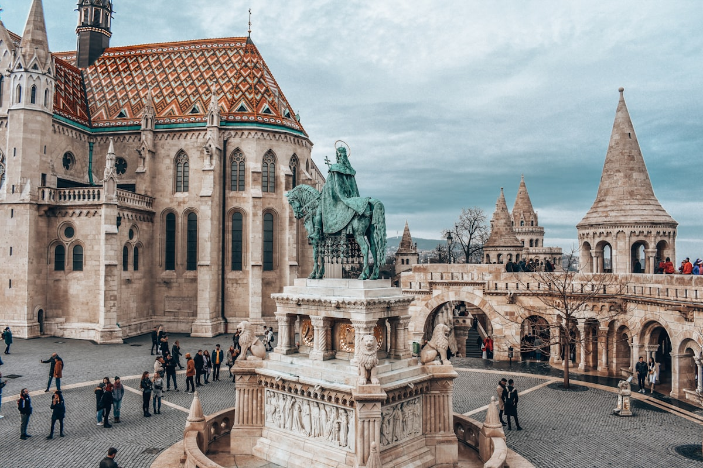
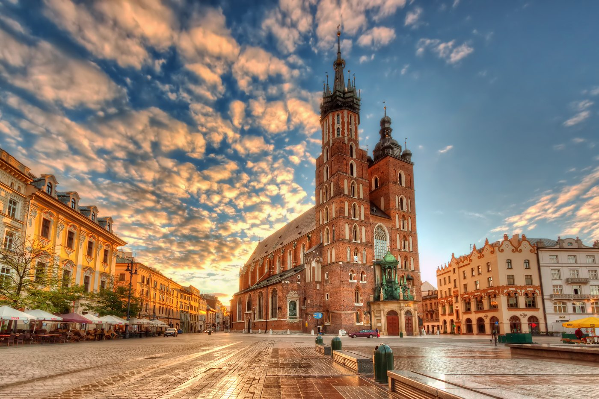

Węgry
Budapeszt
Świetny kierunek na tani city break. Miasto ma piękne widoki, termy, klimatyczne knajpy i dużo atrakcji, które można zobaczyć spacerując.
Budżet: średnio-tani
Zobacz plan wyjazduTanie kierunki na city break, weekendowy wyjazd albo krótki urlop — z oceną opłacalności, klimatu i jedzenia.
← Wróć na stronę głównąZbieramy tu kierunki, na które stać prawie każdego — bez nadrabiania kartą kredytową. Patrzymy nie tylko na ceny noclegów i jedzenia, ale też na klimat miasta, dojazd i atrakcje, czyli na to, czy miejsce naprawdę daje dużo w zamian za wydane pieniądze.

Świetny kierunek na tani city break. Miasto ma piękne widoki, termy, klimatyczne knajpy i dużo atrakcji, które można zobaczyć spacerując.
Budżet: średnio-tani
Zobacz plan wyjazdu
Dobry wybór na weekend bez lotu i większej logistyki. Kazimierz, Stare Miasto, kawiarnie i tanie jedzenie robią robotę.
Budżet: tani/średni
Zobacz plan wyjazduPełne plany tych kierunków dopiero opisujemy — na razie krótka zapowiedź, czego się spodziewać: